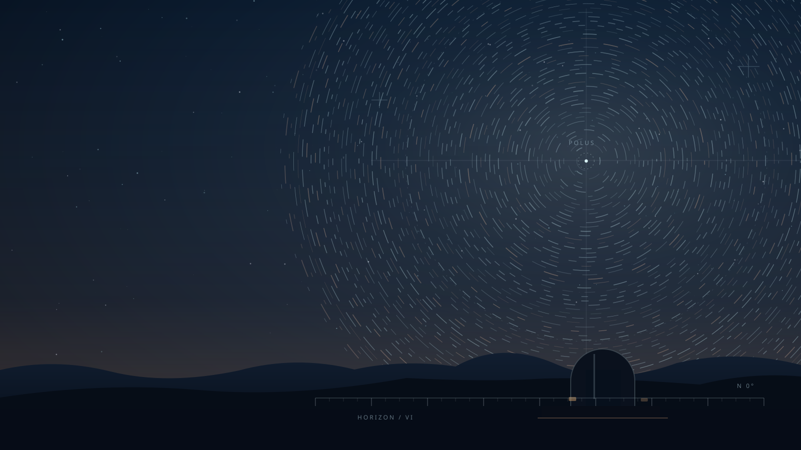

Niebo nie krąży wokół ciebie.
Wszystko nad głową zdaje się wędrować. Gwiazdy wschodzą, przesuwają się i znikają za horyzontem. A przecież to nie one okrążają nas każdej nocy. Pod naszymi stopami obraca się cała Ziemia.
Nie potrzebujesz rakiety. Wystarczy horyzont.
Stań nocą na otwartej przestrzeni. Wyobraź sobie, że Ziemia pod Twoimi stopami jest ogromnym statkiem, który powoli obraca się wśród gwiazd. Nie czujesz tego ruchu — ale niebo daje Ci na niego dowód.
Kiedy spoglądamy na niebo, wydaje się ono kopułą rozpiętą nad obserwatorem. To wygodny obraz, ale nie jest rzeczywistą ścianą, na której zawieszono gwiazdy. Obiekty znajdują się w zupełnie różnych odległościach, a my widzimy przede wszystkim kierunki, z których dociera ich światło.
Astronomowie korzystają z wyobrażonej sfery niebieskiej, by opisywać te kierunki. To model geometryczny, a nie powłoka Wszechświata. Możemy nanieść na niego gwiazdy, bieguny niebieskie, równik niebieski oraz horyzont konkretnego miejsca. [1, 2]
Nie patrzymy na cały Wszechświat. Patrzymy z określonego miejsca, w określonym kierunku.
Zanim zapytasz „która to gwiazda?”, zapytaj „gdzie patrzę?”.
Na lokalnym niebie obowiązuje układ współrzędnych, który każdy może odczytać stojąc na Ziemi. Nie trzeba znać odległości do gwiazdy. Wystarczą dwa kąty: wysokość ponad horyzontem oraz azymut określający kierunek. [3]
Rysunek poglądowy: umowne spłaszczenie kopuły nieba do schematu. Oznaczenia h i A odpowiadają wysokości i azymutowi.
0° to horyzont. 90° to zenit.
Gwiazda na wysokości +30° jest nad horyzontem. Przy −10° znajduje się geometrycznie poniżej niego — nie zobaczysz jej na otwartym, płaskim horyzoncie.
0° północ, 90° wschód.
W astronomicznym systemie używanym w Atlasie azymut liczymy zgodnie z ruchem wskazówek zegara: 180° to południe, 270° zachód.
Niebo ma górę, a Ziemia zasłania dół.
Zenit leży dokładnie nad głową. Nadir — pod stopami. Niewidoczna połowa sfery niebieskiej znajduje się po drugiej stronie planety.
Gdy zostawisz aparat nieruchomo, gwiazdy zaczną pisać okręgi.
Przez kilkadziesiąt minut gwiazdy przesuwają się na zdjęciach, tworząc charakterystyczne łuki. Taki obraz nie wymaga ruchu aparatu: aparat stoi, a my wraz z Ziemią obracamy się pod niebem. [4, 5]

Niebo zostawiło podpis ruchu Ziemi.
Zdjęcie Babaka Tafreshiego powstało nad siecią anten ALMA na płaskowyżu Chajnantor w chilijskich Andach. W centrum kręgów znajduje się południowy biegun niebieski — w południowej części nieba nie ma przy nim tak jasnego odpowiednika Polarnej jak na północy.
To prawdziwe ślady z rejestracji nieba, nie fizyczne linie pozostawiane w kosmosie przez gwiazdy. Zdjęcie i oryginalny opis ESO.
Pełny obrót Ziemi względem odległych gwiazd trwa około 23 h 56 min 4 s. Doba słoneczna jest średnio o blisko cztery minuty dłuższa, ponieważ Ziemia w tym samym czasie przemieszcza się również po orbicie wokół Słońca. [6]
Jedna gwiazda prawie się nie porusza. To nie przypadek.
Na północnym niebie znajduje się gwiazda Polarna — Polaris. Leży bardzo blisko kierunku wyznaczonego przez ziemską oś obrotu. Dlatego na długich zdjęciach kreśli tylko niewielki krąg, podczas gdy inne gwiazdy opisują większe łuki. [7]
Północny biegun niebieski leży na północnym horyzoncie.
Północny biegun niebieski jest około 54° nad północnym horyzontem.
Północny biegun niebieski jest dokładnie nad głową.
To wysokość samego bieguna niebieskiego, która w modelu geometrycznym równa się szerokości geograficznej obserwatora na północnej półkuli. Polaris leży obecnie około 0,74° od tego bieguna, więc jej wysokość delikatnie zmienia się podczas doby gwiazdowej. Nie pokazuje idealnie nieruchomego punktu. [7, 8]
Jeżeli wiesz, jak wysoko nad horyzontem jest biegun niebieski, możesz w przybliżeniu powiedzieć, na jakiej szerokości geograficznej stoisz.
W tym samym momencie różni ludzie mają zupełnie inne niebo.
Wybierz miejsce na Ziemi, jedną z czterech gwiazd i kąt godzinny — czas odmierzany od jej przejścia przez miejscowy południk. Odczytasz rzeczywistą zależność geometryczną: wysokość i azymut gwiazdy względem lokalnego horyzontu. [3, 9]
0 h oznacza przejście gwiazdy przez górny południk obserwatora. Nie oznacza godziny 00:00 ani 12:00 na zegarku.
Wega w Gdańsku nie zachodzi geometrycznie poniżej płaskiego horyzontu.
sin h = sin φ · sin δ + cos φ · cos δ · cos H
φ — szerokość obserwatora, δ — deklinacja gwiazdy, H — jej kąt godzinny. Azymut liczymy od północy przez wschód. Model pokazuje położenia gwiazd na sferze niebieskiej — nie przewiduje, które gwiazdy faktycznie widać na jasnym niebie. [3, 9]
Wszystkie gwiazdy mają orientacyjne, stałe deklinacje z epoki J2000; ich pozycje są liczone dla idealnego geometrycznego nieba. Bez refrakcji atmosferycznej, zabudowy, terenu, precesji, ruchu własnego i dokładnej daty. Zmiana kąta godzinnego to eksperyment w obrębie doby gwiazdowej, a nie lokalny zegar ani prognoza widoczności na dzisiejszą noc.
O tej samej porze jutro gwiazdy będą odrobinę dalej.
Doba gwiazdowa trwa prawie cztery minuty krócej niż słoneczna. Dlatego daną gwiazdę widzimy o tej samej godzinie zegarowej każdego kolejnego wieczoru średnio nieco dalej na jej pozornej drodze ku zachodowi. W przybliżeniu oznacza to przesunięcie o jeden stopień na dobę przy porównywaniu tego samego czasu słonecznego. [1, 6]
przesunięcia czasu powrotu gwiazdy do południka
różnicy w przybliżonym położeniu gwiazd o tej samej godzinie
cały roczny cykl sezonowego wyglądu nocnego nieba
Niebo zimowe i letnie nie jest po prostu inaczej oświetlone. Nocna strona Ziemi patrzy w inną część kosmosu, gdy nasza planeta krąży wokół Słońca. [1]
Znasz już horyzont. Teraz wejdź w niego.
Przed otwarciem pełnej sceny 3D wykonaj trzy doświadczenia w kompasie nieba. Później możesz zmieniać współrzędne obserwatora i oglądać Słońce oraz Księżyc z powierzchni Ziemi w oryginalnym silniku Atlasu.
Gdzie podziała się Polarna?
Wybierz Polaris i Gdańsk, następnie Sydney. Dlaczego w jednym miejscu znajduje się wysoko nad północnym horyzontem, a w drugim nigdy nie wschodzi?
Wega nie zachodzi?
Ustaw Gdańsk i Wegę. Przewiń pełne 24 godziny kąta godzinnego. Nawet najniżej położona Wega pozostaje nieco nad idealnym horyzontem.
Gdzie zobaczysz Kanopusa?
W Gdańsku nie wschodzi. Przenieś obserwatora na południową półkulę. Wybierz godzinę górnej kulminacji i porównaj wysokości.
Otwórz widok z terenu.
W planetarium przełącz się na obserwację z powierzchni. Zmień szerokość i długość geograficzną, obejrzyj azymut i wysokość Słońca. Porównaj je z kompasem gwiazd — to dwa różne rodzaje obiektów.
Ograniczenia: mały kompas wylicza orientacyjne pozycje czterech gwiazd wyłącznie na podstawie deklinacji i kąta godzinnego. Właściwy widok z powierzchni w ATLAS SOLARIS ma osobny model geometrii ciał Układu Słonecznego, wykorzystuje przybliżone elementy NASA/JPL i uproszczone osie IAU. Rozmiary, gwiazdy tła, refrakcja i szczegóły lokalnego krajobrazu mogą być przedstawione schematycznie. Nie jest to narzędzie nawigacyjne ani dokładna prognoza astronomiczna.